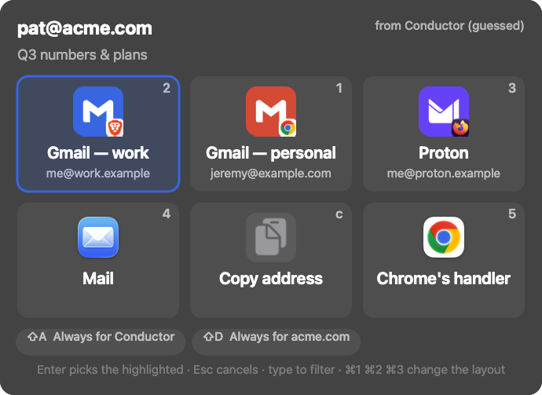
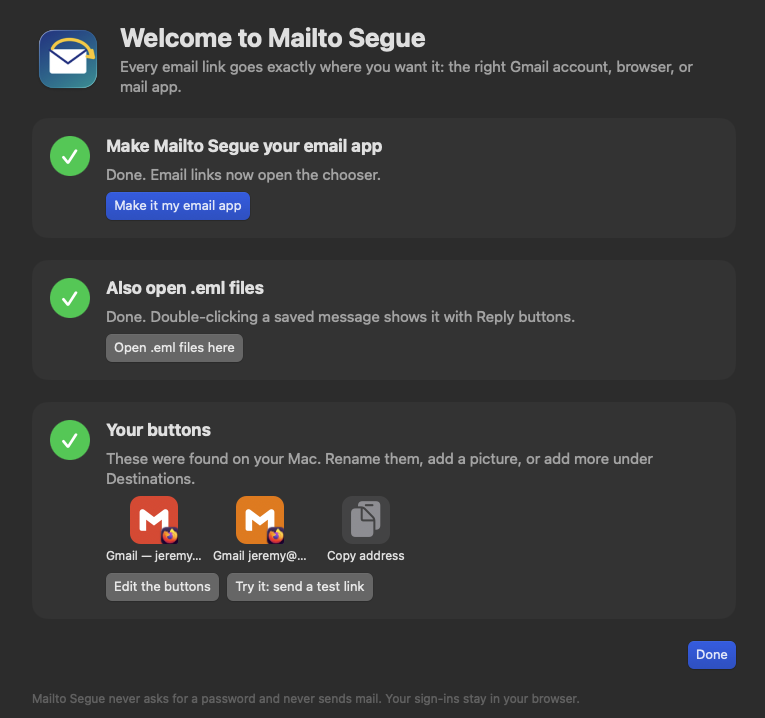
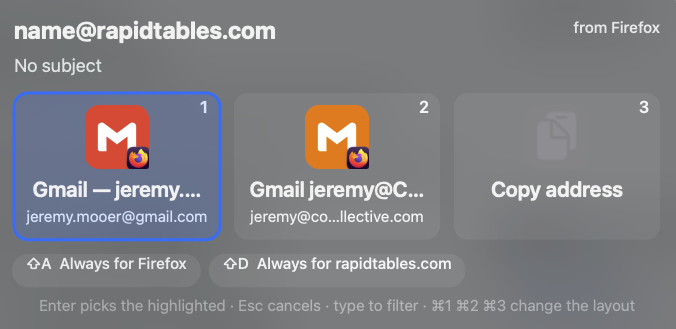
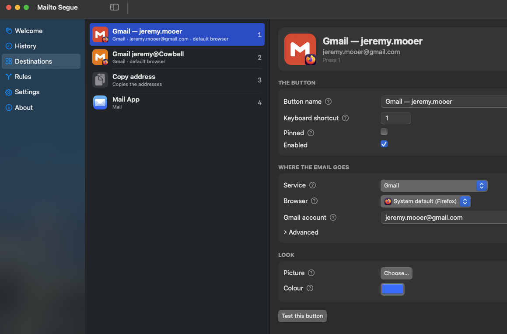

Open-source · macOS 14+
Every email link, exactly where you want it.
Mailto Segue becomes your default email app, then hands each
mailto: link to the right place: a specific Gmail account,
a specific browser, or a desktop mail app. One click and it's gone.
Status: v1.0 is built and tested. The first public release is on the way — nothing is published yet.

Click a link. Pick a button. Done.
No more "which account is this even going to?" When you click an email link, a chooser pops up with a big picture button for each of your destinations. Click one, or press its number, and the draft opens where you meant it to.
How it works
Make it your email app
Open Mailto Segue once. It offers to become your default email app and
to open saved .eml files. It also finds the Gmail accounts,
browsers and mail apps already on your Mac and turns them into buttons.

Click any email link
The chooser appears on screen in under 200 ms. Click a button or press its number. Esc cancels, and you can type to filter. Tap Always for this app or Always for this domain to skip the chooser next time.

Tune your buttons
Rename any button, give it a picture, assign a keyboard shortcut, and point it at a service, a browser and an account. Plain labels, boxed fields, a ? on anything that needs a sentence. Never a password or a sign-in.

What it does
-
The right account and browser
Send a link to a specific Gmail account, in a specific browser and profile — or to Mail, Mimestream, Outlook, Spark, Thunderbird, or the clipboard.
-
Rules that decide for you
"Links clicked in Slack → work Gmail." "Anything to acme.com → work Gmail." Match by recipient, sender, or the app that sent the link.
-
Reply to
.emlfilesDouble-click a saved message and reply from any account. If it was a Gmail account, Segue opens the real thread so your reply stays threaded.
-
It doesn't hang around
Not a menu-bar app. macOS launches it per link, it routes, it quits. Built to show the chooser in under 200 ms. Resident mode is an opt-in setting.
-
A
seguecommandRoute links, open messages, run
segue doctor, or make and restore the default handler — all from the terminal. -
A marshaller, not a client
It never composes, edits or sends mail, and never asks for your password. It decides where a draft opens. You still type in Gmail, Mail, or wherever it lands.
Private by design
No accounts. No passwords. No network calls of its own.
- No telemetry, no tracking. Mailto Segue only opens the URLs you asked for. Your webmail sign-in stays in your browser.
- HTML email is shown with remote images and scripts blocked, so tracking pixels never fire.
- Everything stays on your Mac, in a plain JSON file you can read, edit, or keep in your dotfiles.
- No special permissions. No Accessibility, Automation or Full Disk Access.
Install
Once v0.1 ships, with Homebrew:
brew install --cask jeremym/tap/mailto-segue
open -a "Mailto Segue"
Then click Make Mailto Segue my email app and confirm the
macOS prompt. Prefer to build it yourself? Clone the repo and run
make install. Full instructions are in the
README.
Signed with the project's own certificate (not an Apple Developer ID) and verified by a published checksum. macOS 14 Sonoma or later · universal binary · MIT licensed.